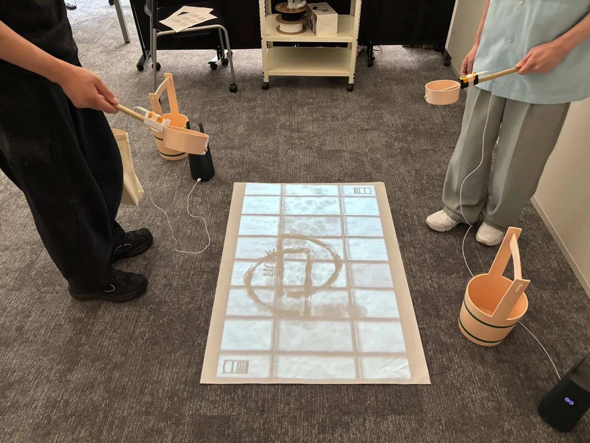
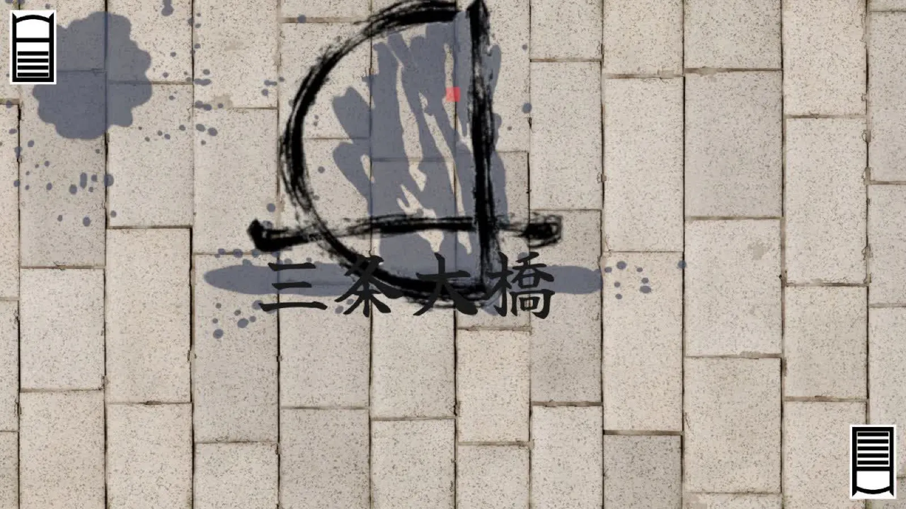
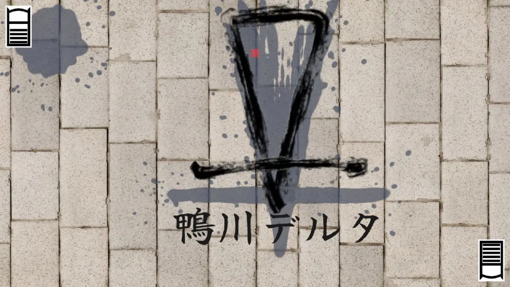
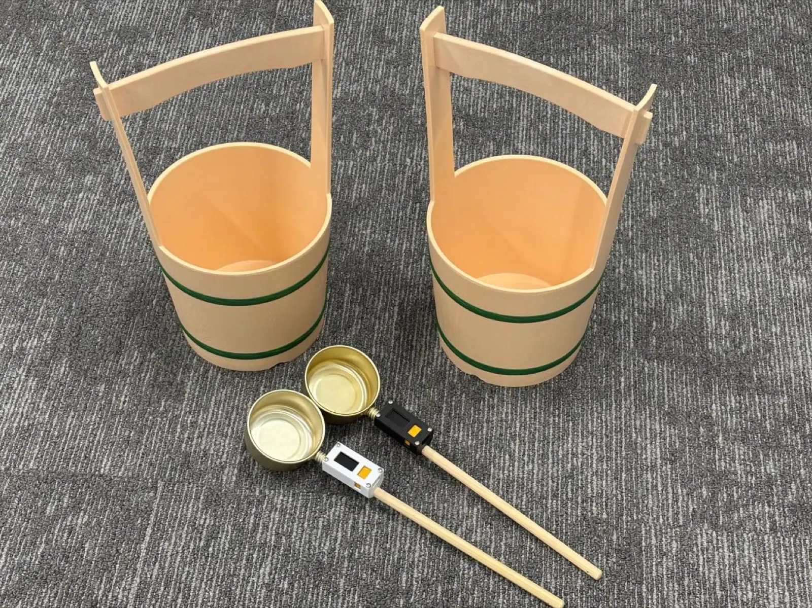
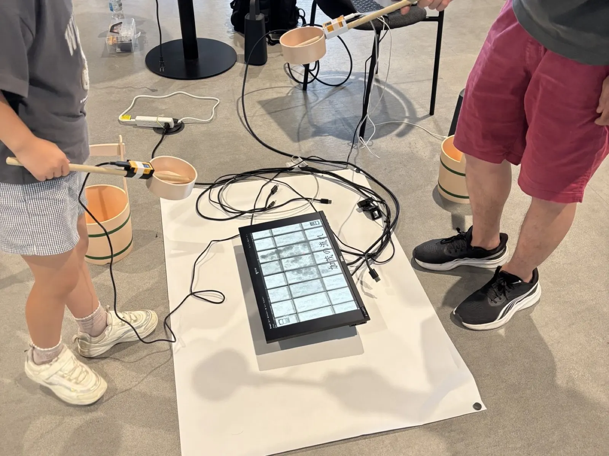

01作品概要
足もとの「打ち水の床」と、
正面の「路地」の 2 画面で遊ぶ。
柄杓を振る気持ちよさを、
床に残る水跡と音で返すこと。
床に水跡が広がり、
名前がつく瞬間。


02ゲームシステム
「こう撒いたら、どうなる？」
二人の会話が、偶然の銘を生む。

- 二人が交代で柄杓を振り、床に水を撒く。
- 水跡の形に「扇」「一文字」などの銘がつく。
- 銘は一人では完結しない。相手の水跡と組み合わさると、京都の地名に見立てた「組み合わせ銘」に変わる。
決まった回数を撒いたら終わり。勝ち負けはない。
楽しみどころ
話す
相手の水跡を見て、「こう撒いたら？」と相談する。
試す
振り方や位置を変えて、撒いてみる。
出会う
偶然、思いがけない組み合わせ銘が生まれ、二人で盛り上がる。
03企画の二軸
「京都」と「ボタン以外の入力」に、
祖母の打ち水で答えた。
京都をモチーフにする。
ボタン以外の入力動作が必要。
京都に住む祖母の打ち水。
撒く音と、残る水跡が心地よかった。
課題の「京都」から
見立て
水跡の形を京都の景色に見立てて、銘をつける。
例：「一文字」＋「末広」→「鴨川デルタ」
京都の枯山水は、石と砂で水の流れを表す。江戸時代の遊び「投扇興」も、扇・蝶・枕が落ちた形に『源氏物語』の巻名で銘をつける。日本人が古くから持つ「見立て」の感性を、遊びの中心にした。
原体験の「打ち水」から
行動に、音が応える。
少し遅れて鳴るパシャッは、「届いた」の合図。
→ 柄杓型コントローラーを振ると、水の音が鳴る。
行動が、形に残る。
水跡がじんわり広がり、涼しさが目に見える。
→ 振り方で、水跡の形が変わる。
04課題と解決
振った形と、出る水跡が合わない。
説明がないと「あれ？」となる人が多かった。「こう撒いたら、どうなる？」を試すには、振り方が思った形にきちんと表れる必要がある。

原因 1 遊ぶ人の振り方
- 原因
- 説明がないと、みんな刀のように振る。
- 解決
- 機能のない桶を持ってもらうと、水を撒くように振ることに気づいた。最初から桶を持つ形にし、桶にバッテリーを入れて持つ理由をつくった。
- 結果
- 安定して、納得感のある形が出やすくなった。
原因 2 判定のしかた
- 原因
- しきい値を、自分の振り方に合わせて手で決めていた。人によって判定がずれる。
- 解決
- いろいろな人の振りのデータを集め、機械学習で判定する仕組みをつくる。
- 結果
- 挑戦中。
05チーム
役職に関係なく、みんなで考える。
自信のある企画だからこそ、一人の力ではもったいない。
仲間を集める
自分にできない部分や、アイデアを集めて、より良いものにしたかった。「この企画が面白い」と思ってくれた 3 人が集まった。
みんなで考える
企画とチーム運営を担当した。進捗の確認に加えて、一人ひとりと定期的に話し、みんなで考える場をつくった。
選んで、磨く
案を出すだけでなく、挙がった案から良いものを見つけて採用し、どう良くするかを考えた。例：水を撒くほど音が賑やかになる、インタラクティブミュージック。
チーム（4 人） 黒が自分の担当
コントローラー
06展示で見たこと
遊びが、親から子へ打ち水を伝えていた。

ゲームに興味を持った親子に、「打ち水がテーマのゲームです」と説明すると、男の子がお父さんに聞いた。
「打ち水って何？」
お父さんはこう答えていた。
「おばあちゃんの家で
やってたやつだよ」
そのあと男の子は、何度も戻ってきて遊んでくれた。
延べ 100 人以上 が遊んだ。年齢も国籍もさまざまで、ふだんゲームをしない人も遊んでくれた。
07学びとこの先
学んだこと自分の感覚ではなく、遊ぶ人を見て作る。
- 判定
- 自分の振り方だけを基準にして、ほかの人が振るとうまくいかなかった。
- 桶
- 自分では思いつかなかった振り方を、遊ぶ人が教えてくれた。
遊びを通して、
打ち水の見方を変える。
この作品は、家で遊べるゲームではない。でも遊んだ人が家に帰って、柄杓で打ち水をしてみる。遊びの外の夏まで、少し変えたい。

次の作品
でんでんファイター
でんでん太鼓を振って、相手を吹っ飛ばす。